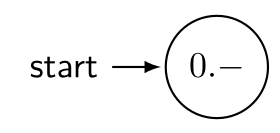
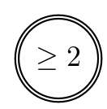
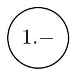
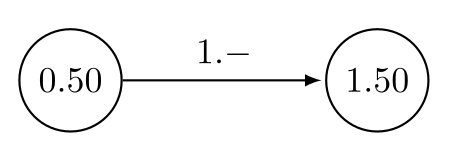
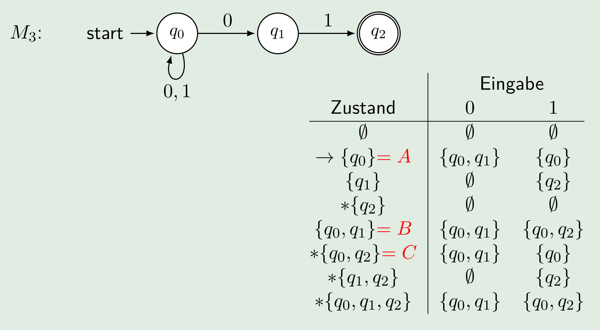

Summary
| Begriff | Beschreib |
|---|---|
| Alphabet | Endliche, nichtleere Menge von Symbolen (\(\Sigma=\{a, b, c\}\)) |
| Wort | Endliche Folge von Symbolen |
| \(\varepsilon\) | Das Leere Wort (\(\vert \varepsilon\vert=0\)) |
| Sprache | Eine Menge von Wörtern (\(L=\{10, 1100, ...\}\), in Prosa oder \(L=\{1^n0^n\mid n\in \N\}\)) |
| \(\emptyset\) | Leere Sprache (\(\emptyset \neq \{\varepsilon\}\)) |
| \(\vert abca\vert_a=2\) | Häufigkeit von a |
| \((abc)^R\) | Spiegelwort von \(abc\) |
| (echter) Präfix | Der Start eines Wortes (echt = Präfix nicht gleich das Wort) Kann auch \(\varepsilon\) sein |
| (echter) Infix | Teilwörter (echt = Infix nicht gleich das Wort) Kann auch \(\varepsilon\) sein |
| (echter) Suffix | Das Ende des Wortes (echt = Suffix nicht gleich das Wort) Kann auch \(\varepsilon\) sein |
| \(\Sigma^2\) | Alle Wörter des Alphabets \(\Sigma\) mit der Länge 2 |
| Kleenesche Hülle \(\Sigma^*\) | Alle Wörter des Alphabets \(\Sigma\) (\(\Sigma^+=\Sigma^*\setminus\{\varepsilon\}\)) |
| Konkatination \(x\circ y=xy\) | Zwei Wörter werden zusammen verketet |
| Wortpotenzen | \((ab)^3=ababab\) |
| Sprachen-Konkatenation | \(AB=\{uv\mid u \in A \text{ und } v \in B\}\) |
| Kleenesche Hülle einer Sprache | \(A^*=\varepsilon \cup A \cup AA \cup AAA \cup ...\) |
| Komplement einer Sprache | \(\overline L=\Sigma^*-L=\Sigma^*\setminus L\) |
Chomsky-Hirarchie
- Typ-0 - rekursive Aufzählbar und Turing-Maschinen
- Typ-2 - Nicht-deterministische Kellerautomaten / Kontextfreie Gramatik
- Typ-3 - RegEx / Endliche Automaten (DEA, NEA)
Regex
- \(\epsilon\) - eine leere Regular-Expression. Diese matcht nichts. Beschreibt \(\{\varepsilon\}\)
- \([x_1, x_2, ...,x_k]=x_1|x_2|...|x_k\)
- \(\oslash\) - eine leere Menge von Regular-Expressions
- \(\O\) - eine leere Sprache
*zuerst verarbeiten, danach Konkatenation, danach|verarbeiten (Stern vor Konkatenation vor Strich)
Wenn zwei Sprachen regulär sind, ist das Resultat von einem Operator mit diesen Sprachen regulär
Endliche Automaten
Deterministische Endlichen Automat: \(M=(Q, \Sigma, \delta, q_0, F)\)
- \(Q\) : Alle Zustände des Automaten \(Q=\{q_0, q_1, ...,q_n\}\)
- \(\Sigma\): Eingabealpabet
- \(\delta: Q\times \Sigma \rightarrow Q\): Übergangsfunktionen, welche von einem Zustand und einem Eingabe Symbol zum nächsten Zustand führt
- \(q_0\): Startzustand
- \(F\subseteq Q\): Menge der akzeptierten Zuständen. Mindestens ein Zustand muss akzeptiert sein
Im folgenden Beispiel sind ist eine Berechnung, bestehended aus Berechnungsschritte (welche aus Konfigurationen bestehen). Die Startkonfiguration ist: \(\{q_0\}\times \Sigma^*\), die Endkonfiguration: \((q, w)\in Q\times\{\epsilon\}\) $$ (q0, a_1a_2a_3)\vdash_A(q_1, a_2a_3)\vdash_A(q_2, a_3)\vdash_A(q4, \epsilon)=(q0, a_1a_2a_3)\vdash_A^(q4, \epsilon) $$ Die Sprache* eines endlichen Automaten besteht aus allen Wörter, welche in einem Endzustand landen ohne verbleibenden Input.
| Was | Beschreibung | ||
|---|---|---|---|
|  | Der Startzustand |  | Akzeptierter Endzustand |
|  | Normaler Zustand |  | Übergangsfunktionen: Vom Zustand "0.50" kann zu "1.50" gelaufen werden |
Nicht Deterministische Automaten (NEA)
Eine NEA kann es für einen Input und Zustand mehrere Übergänge geben (Übergangsfunktion: \(\delta: Q\times \Sigma\rightarrow \mathcal P(Q)\)). Es werden alle Möglichkeiten von der NEA durchprobiert. Eine NEA akzeptiert ein Wort, wenn eine Möglichkeit akzeptiert wird.
Eine \(\varepsilon\)-NEA ist eine NEA, welche den Zustand wechseln kann, ohne ein Input zu konsumieren (Übergangsfunktion: \(\delta: Q\times \Sigma \cup \{\epsilon\}\rightarrow \mathcal P(Q)\))
Um eine \(\varepsilon\)-NEA in eine NEA umzuwandeln, muss überlegt werden, was für ein Zeichen als nächstes konsumiert werden könnte und diese in den usprünglichen Übergang aufzunehmen.
Teilmengenkonstruktion (\(NEA \to DEA\))
- Die Zustände sind die Potenzmenge von \(Q_N\) (Potenzmenge: \(\mathcal P(\{0, 1\})=\{\emptyset, \{0\}, \{1\}, \{0, 1\}\}\))
- Die potentielle Startzustand Kandidaten sind alle diese Teilmengen von \(Q_N\), welche \(q_0\) enthalten
- Akzeptierte Zustände sind alle Teilmengen, welche ein Element aus \(F_N\) besitzen
- Aus den Zuständen und eingaben soll nun eine Tabelle gezeichnet werden. Bei dieser können alle Zustände gestrichen werden, welche nicht erreichbar sind. Also nie bei einer Eingabe-Spalte auftauchen. Dies muss solange wiederholt werden, bis nichts gestrichen werden kann. Wenn \(\{q_1\}\) in einer Eingabe-Spalte steht, heisst das nur, dass \(\{q_1\}\) vorhanden ist. \(\{q_1, q_2\}\) muss immer noch gestrichen werden, wenn es nicht selbst vorkommt Wenn eine Verbindung das leeres Wort nimmt, werden die Zustände, welche man vom leeren Wort Zustand erreichen kann, auch vom ursprünglichen Wort als erreichbar angesehen.
- Die noch nicht gestrichenen Resultaten können nun Namen verteilt werden (z.B A-Z)

DEA \(\to\) RegEX
- Für jeden Zustand eine separate Sprache definieren. Diese darf sich selbst referenzieren oder auch andere Sprachen
- Kürzen und einsetzen. Meistens ist es am einfachsten von den Endzuständen zu kürzen zu beginnen
Arden'sches Lemma: \(L=UL|V\Rightarrow L=U^*V\), dabei ist \(L\) eine Spraceh und \(U\) einen andren Ausdruch
**Zustandsklassen: ** \([p]=\{w \in \Sigma^*\vert M \text{ endet nach Lesen des Input-Worts } w \text{ im Zustand } p\}\), dabei ist \(M\) einen Automaten, \(w\) ein eingabe Wort und \(p\) ein Zustand (nicht unbedingt der Endzustand)
Untere Schranke für endliche Automaten
Die grundsätzliche Idee ist, dass wenn die Worte \(x\) und \(y\) in derselben Zustandsklasse ist, dann ist \(zx=zy\), wobei \(z\) irgend ein Wort ist.
Es müssen nun die folgende Schritte gefolgt werden:
- Es wird eine Annahme getroffen, wie viele Zustände eine Maschine benötigt
- Es müssen für jeden Zustand ein Wort gefunden werden, welches in diesem Zustand endet
- Es wird nun für jede Kombination von Wörter von Schritt 2. ein Prefix oder Postfix \(z\) gefunden werden, welcher kombiniert mit dem einen Wort, ein Wort ergibt, welches in der Sprache ist und mit dem anderen Wort ein, ein Wort welches nicht in der Sprache ist
- Wenn dies für jedes Wort von Schritt 2. getan werden kann, dann werden mindestens so viel Zustände benötigt. Da wenn zwei Wörter mit demselben Wort verbunden wird und diese in unterschiedlichen Sprache sind, die zwei Wörter in unterschiedlichen Zustände endet.
Kontextfreie Gramatik
Die Kontextfreie Grammatik \(G\) ist durch das Tupel \((N, \Sigma, P, A)\) definiert, wobei
- \(N\) das Alphabet der Nichtterminale (Variabeln)ist , welche mit Produktionen in \(P\) aufgelöst werden können
- \(P\) eine endliche Menge von Produktionen in der Form \(X \rightarrow \beta\) ist. Dabei ist der Kopf \(X\in N\) und der Rumpf \(\beta \in (N\cup\Sigma)^*\))
- \(A\) das Startsymbol ist und gilt \(A\in N\)
$$ G_1=({A}, {0, 1}, P, A) \ P={A\rightarrow0A1,A\rightarrow\varepsilon} $$ Eine Kontextfreie Grammatik wird mehrdeutig genannt, wenn es für ein Wort mehrere Ableitungsbäume gibt. Eine Sprache ist kontextfrei, wenn ein Kellerautomaten dazu gebaut werden kann.
- Mehrere Ableitungsschritte: \(A\Rightarrow AA \Rightarrow (A)A \Rightarrow (A)(A)\Rightarrow()()\)
- Dies kann auch als: \(A \overset*\Rightarrow w\) geschrieben werden. Dabei wird das Wort \(w\) vom Symbol \(A\) erzeugt/generiert.
- Ein Wort wird ableitbar gennant, wenn es eine Ableitung für dieses Wort gibt.
- Auf der Rechten Seite sieht ist ein Abbleitungsbaum.
- Linksseitig Ableiten: Die am meisten linke Variable wird immer zuerst abgeleitet
- Rechtsseitig Ableiten: Die am meisten rechte Variable wird immer zuerst abgeleitet
- eindeutige Gramatik: Eine Gramatik, welche nur auf eine Art abgeleitet werden kann

DEA zu kontextfreien Sprache
Es gibt eine DEA \(M=(Q, \Sigma, \delta, q_0, F)\). Aus dieser kann eine kontextfreie Sprache erstellt werden:
- Für jeden Zustand \(q_i\) gibt es ein Nichtterminal \(Q_i\)
- Für jede Transition \(\delta(q_i, a)=q_j\) gibt es eine Produktion \(Q_i\rightarrow aQ_j\)
- Für jeden akzeptierten Zustand gibt es eine Produktion \(Q_i\rightarrow \varepsilon\)
- Das Nichtterminal \(Q_0\) wird das Startsymbol
Keller Automaten (KA)
Ein deterministischer Keller Automaten (KA) wird als 7-Tupel dargestellt: \((Q, \Sigma, \Gamma, \delta, q_0, \$, F)\))
- \(\Gamma\) ist das Alphabet des Kellers (bzw. des Stacks)
- \(\delta: Q\times (\Sigma \cup \varepsilon) \times \Gamma\rightarrow Q\times\Gamma^*\) ist die (partielle) Übergangsfunktion
- \(\$\in \Gamma\) ist ein ausgezeichnetes Symbol vom Alphabet des Stacks/Kellers
Zu dem gilt für die Übergangsfunktion \(\delta\), wenn \(\delta(q, b, x)\) definiert ist, darf \(\delta(q, \varepsilon, x)\) nicht definiert sein. Zu begin der Ausführung ist im Strack \(\$\), was ein leerer Stack darstellt.

Nichtdeterministischen Kellerautomaten (NKA)
Eine NKA ist gleich wie eine KA, nur das die Übergangsfuntkion den Typ \(\delta: Q\times (\Sigma \cup \varepsilon) \times \Gamma\rightarrow \mathcal P (Q\times\Gamma^*)\) hat. Der Rückgabetyp ist die Potenzmenge. Somit kann in der NKA ein Eingang mehrere Ausgänge haben.
Wie auch bei einer NEA kann nun im \(\varepsilon\) (das leere Wort) für \(\Sigma\) in der Übergangsfunktion.
Nicht alle NKA können in eine KA umgewandlet werden. Auch gibt es kontextfreie Sprachen, welche nicht in eine KA umgewandlet können werden.
Berechnungen und Berechnungsschritte
 Die Berechnungssfunktion dazu wäre: \(\delta(q, b, c)=(p, w)\)
Dabei befindet sich der Automaten im Zustand \(q\), list das Symbol \(b\) von der Eingabe und wird das Kellersymbol \(c\) vom Stack lesen und \(w\) zurück schreiben.
Die Berechnungssfunktion dazu wäre: \(\delta(q, b, c)=(p, w)\)
Dabei befindet sich der Automaten im Zustand \(q\), list das Symbol \(b\) von der Eingabe und wird das Kellersymbol \(c\) vom Stack lesen und \(w\) zurück schreiben.
Eine Berechnung besteht aus mehreren Berechnungsschritte und eine Start- und Endkonfiguration.
Beispiel: \((q_0, 0011, \$) \vdash (q_0, 011, 0\$)\vdash (q_0, 11, 00\$)\vdash(q_1, 1, 0\$)\vdash(q_1, \varepsilon, \$)\vdash(q2, \varepsilon, \$)\) Dies kann auch als \((q_0, 0011, \$)\vdash^*(q2, \varepsilon, \$)\) geschrieben werden.
Turing Machinen
Eine (determinischtische) Turing-Maschine (DTM) ist ein 7-Tupel: \(M=(Q,\Sigma, \Gamma, \delta, \textvisiblespace, F)\)
- \(\delta: Q\times \Gamma \rightarrow Q\times\Gamma\times D, D=\{L, R\}\): Die Übergangsfunktion, welche den nächsten Zustand, was geschrieben werden soll und ob das Band nach Links (L) oder nach rechts (R) geschoben werden soll
- \(\Gamma\): Das Bandalphabet, dabei muss \(\Sigma \subset \Gamma\)
- \(\textvisiblespace\): Das Leerzeichen, dabei muss \(\textvisiblespace \in \Gamma\) und \(\textvisiblespace \not \in \Sigma\)
Berechnungen werden folgendermassen dargestellt: \(X_1,...X_{i-1}qX_iX_{i+1},...,X_n\vdash X_1,...X_{i-1}pX_iX_{i+1},...,X_n\) Der aktuelle Zustand ist in der Mitte (\(q\) bzw. \(p\)). Abgekürzt wird es als \(K_1\vdash^* K_n\) geschrieben
Eine Sprache, welche von einer TM akzeptiert wird, nennt sich rekursiv aufzähltbar
 Im folgenden Bild wird eine Übergangsfunktion einer Turing Maschine gezeigt: \(\delta(q_1, X)=(q_2, Y, D)\), wobei \(D\in\{L, R\}\)
Im folgenden Bild wird eine Übergangsfunktion einer Turing Maschine gezeigt: \(\delta(q_1, X)=(q_2, Y, D)\), wobei \(D\in\{L, R\}\)
Modifikationen
- Mit zusätzlichem Speicher
- Mit mehreren Spuren, welche auf einem Band sind (ein Lese/Schreibkopf)
- Mit mehreren Bändern (mehrere Lese/Schreibköpfe) (Übergangsfunktion: \(\delta:Q\times\Gamma^k\rightarrow Q\times \Gamma^k \times \{R, S, L\}^k\))
- Nicht deterministische Turning Machine Übergänge müssen nicht einzigartig sein (wie bei NEAs) (Übergangsfunktion: \(\delta: Q\times \Gamma \rightarrow \mathcal P(Q \times \Gamma \times \{R, L\})\) Nicht deterministische TMs sind gleich mächtig, wie deterministische TMs.
- Mit semi-beschränktem Band Das Band ist nur unendlich in eine Richtung. Eine Semi-beschränkte TM ist gleich mächtig, wie eine TM. (Beweissidee: Eine semi-beschränkte TM mit zwei bänder, eines für die positive und eines für die negative Seite)
- \(k\)-Stack Machine Eine Deterministischer Kellear Automat mit mehreren Stacks (Übergangsfunktion: \(\delta: Q \times \Gamma_1\times...\times\Gamma_n\rightarrow Q\times\Gamma_1^*\times...\times \Gamma^*_k\)) Eine 2-Stack Machine kann ein Band simulieren (Ein Stack für die negative und ein Stack für die positive Seite) und ist demnach gleich mächtig, wie eine TM
- Zähler-Machine (Hat Zähler einer natürlichen Zahl (\(n \ge 0\)) anstatt Stacks) Ein 2-Stack kann mit mit 3-Zähler ersetzt werden und daher ist ein Zähler-Machine gleich wertig, wie eine TM. Dafür wird jedem Symbol des Stacks eine Zahl zugeordnet (1, 2, 3, 4, ...). Der aktuelle Wert wird mit der Anzahl Symbolen multipliziert und mit dem nächsten Symbol addiert (\(c_{new}=c_{old}\cdot length + s\)). Beim dekodieren wird der Wert durch die Anzahl Symbole geteilt und der Rest ist das aktuelle Symbol. Diese 3-Zähler Machine kann mit einer 2-Zähler Machine simuliert werden, in dem die 3-Zähler mit der Encodierung \(2^i\cdot 3^j\cdot 4^k\) enkodiert werden und mit einer Primfaktorzerlegung dekodiert werden. Ein Zähler wird noch zum Rechnen benötigt.
Universelle Turning Maschine (UTM)
Eine Turing Maschine, welche andere Turning Maschinen simulieren kann. Alle Zustände werden Unär-Kodiert (0 = 1, 00 = 2, 000 = 3, ...) mit dem Trennzeichen 1
Dabei wird folgendes gespeichert: Die Übergangsfunktion \(\delta(q_i, X_j)=(q_k, X_l, D_m)\to 0^i10^j10^l10^m\). Einzelne Übergansfunktionen werden mit 11 getrennt. Die Machine wird mit 111 vom Input getrennt.
Berechnungsmodelle
Intuitive berechenbare Funktion: eine Funktion, welche algorithmisch (durch eine mechanisches Verfahren) berechnet werden kann. Jede intuitive berechenbare Funktion lässt sich mit einer TM berechnen.
Turing-berechenbare Funktionen: Funktionen, welche von einer Turing-Maschinen berechnet werden können
Gandys These M: Alles, was jemals mit einer (endlichen) Maschine/physikalischen Apparatur berechnet werden kann, ist bereits von einer Turing-Maschine berechenbar. Bis jetzt wurde noch kein Gegenbeispiel zu beiden Thesen gefunden worden.
Turing-Vollständigkeit: Für jede Zahl \(k \in \N\) und jede Funktion \(f: \N^k \to \N\) gibt es eine Turing-Machine und While-Programm
- Zuweisungen:
x = y + coderx = y - c(wobei c eine Konstante ist!) x0ist der Output;x1,x2, ... sind die Inputs/Variabeln- Alle Variabeln können natürliche Zahlen (\(n \ge 0\)) enthalten (\(2-5=0\))
- Loop-Programme
LOOP x DO ... ENDDer Loop wirdx-mall durchgeführt. Ändern vonxhat kein Einfluss- While-Programme (auch
LOOPist erlaubt) While xi > 0 Do ... EndDie einzige erlaubte Bedingung istxi > 0- While-Programme terminieren nicht immer
- Jedes Loop-Pgramm ist auch ein WhileProgramm
- GOTO-Programme:
- Marker: (
M1:,M2:, ...),Goto Mk,If xi = c Then Goto Mr,Halt(Haltet das Programm an) - Primitiv rekursive Funktion (nach dem Muster \(f: \N^2 \to \N\))
- Konstante Funktion: \(c^n_k: \N^n \to \N \mapsto c^n_k(x_1, ..., x_n)=k\)
- Nachfolge Funktion: \(\eta: \N \to \N \mapsto \eta(x)=x+1\)
- Projektion (\(1 \le k \le n\)): \(\pi^n_k: \N^n \to \N \mapsto \pi^n_k(x_1, ...,x_k,...,x_n)=x_k\)
- Wenn \(f\) und \(g_i\) primitive rekursive Funktionen sind, dann ist \(h(\vec x)=f(g_1(\vec x), ..., g_k(\vec x))\) auch eine primitive rekursive Funktion
- Primitive rekursive Funktionen = LOOP-Programme
Ackermann (ist Turing-berechenbar, nicht Loop berechen, bzw. nicht primitive rekursive, ist total): $$ \begin{align} a(0, m)&= m + 1\ a(n + 1, 0) &= a(n, 1)\ a(n + 1, m + 1) &= a(n, a(n + 1, m)) \end{align} $$
Entscheidbarkeit
Entscheidbar: Es gibt eine Turing-Maschine, welche für alle akzeptierten (wenn ein
1aufs Band geschrieben wird) und nicht akzeptierten Zustände (wenn ein0aufs Band geschrieben wird) endetSemi-Entscheidbar: Es gibt eine Turing-Maschine, welche für alle akzeptierten Zustände hält und für nicht akzeptierte Zustände nie hält.
Reduktion Es gibt eine Funktion \(F: \Sigma^* \to \Gamma^*\) für die Sprache \(A \subset \Sigma^*\) und \(B \subset \Gamma^*\). Dies wird als \(A \preceq B\) geschrieben
- Jede entscheidbare Sprache ist auch semi-entscheidbar
- Wenn eine Sprache \(A\) und ihr Komplement \(\overline A\) semi-entscheidbar ist, sind \(A\), wie auch \(\overline A\) entscheidbar
- Wenn \(A\) entscheidbar ist, ist auch \(\overline A\) entscheidbar
- Wenn \(A\) und \(B\) (semi-)entscheidbar sind, ist auch \(A \cup B\) und \(A \cap B\) (semi-)entscheidbar
- \(A\) ist rekursive aufzählbar \(\Leftrightarrow\) \(A\) ist semi-entscheidbar \(\Leftrightarrow\) \(A\) ist der Werte und Definitionsbereich einer berechenbaren Funktion
- \(A\preceq B\) und \(B \preceq C\), dann gilt auch \(A \preceq C\)
- Ist \(B\) (semi-)entscheidbar und \(A \preceq B\), dann ist auch \(A\) (semi-)entscheidbar
allgemeine Halteproblem: Gibt es eine TM \(H\), welche entscheiden kann, ob ein Program mit einem Input anhält oder nicht immer weiter läuft.
leere Halteproblem: Ob es eine TM \(H_0\) gibt, welche entscheiden kann, ob ein Programm mit einem leeren Band anhält
spezielle Halteproblem: Es wird eine TM \(H_S\) erstellt, welche \(H\) fragt, ob ein Program endet. Wenn ja, loopt \(H_S\), wenn nein, beendet \(H_S\). Wenn \(H_S\) das als Input \((H_S, H_S)\) bekommt, ist unklar, ob \(H_S\) anhält oder weiterläuft und daher kann es keine TM \(H\) geben.
Alle Halteprobleme sind semi-entscheidbar und nicht-entscheidbar.
Konsequenzen von Satz von Rice: Unmöglich im Allgemeinen zu überprüfen, ob ein Program
- eine bestimmte Spezifikation erfüllt
- frei von “bugs” ist
- bei jeder Eingabe terminiert
- und ein anderes Program dieselbe Funktionalität haben
Colatz: \(n \text{ ist gerade} \Rightarrow n=\frac n 2 \text{ sonst } n=3n + 1\) Alle positiven Inputs enden in \(4 \to 2 \to 1 \to 4 \to 2 \to 1\)
Komplexitätstheorie
- Zeitkomplexität: Laufzeit des besten Programms, welche ein Problem löst
- Platzkomplexität: Speicherbedarf des bestens Programmes
-
Beschreibungskomplexität: Länge des kürzesten Programmes
-
Obereschranke: \(f \in \mathcal O(g)\Leftrightarrow f(n) \le c \cdot g(n)\) wenn \(n\) grösser als \(n_0\) ist (Wobei \(g\) und \(f\) eine Funktion \(\N \to \N\) ist und \(c\in \N\) eine Konstante)
- Untereschranke: \(f \in \Omega(g)\Leftrightarrow f(n) \ge \frac 1 d \cdot g(n)\) wenn \(n\) grösser als \(n_0\) ist (Wobei \(d \in \N\) eine Konstante ist)
- \(f\in \Theta(g) \Leftrightarrow f(n)\in \mathcal O(g(n))\wedge f(n)\in \Omega(g(n))\)

| Komplexität | Beispiel |
|---|---|
| \(\mathcal O(1)\) | Konstanter Aufwand unabhängig vom Input |
| \(\mathcal O(n)\) | Linearer Aufwand: Ein For-Loop Abhängig von \(n\) |
| \(\mathcal O(\log n)\) | Logarithmischer Aufwand: Binary-Search/ Mit jeder Iteration wird der Aufwand halbiert |
| \(\mathcal O(n^2)\) | Quadratischer Aufwand: Zwei verschachtelte For-Loops abhängig von \(n\) |
| \(\mathcal O(2^n)\) | Exponentieller Aufwand: Mit jeder Iteration verdoppelt sich der Aufwand |
NP vs P
- Polynomzeit lösbar (P): Problem ist teil von \(\mathcal O(n^c)\), wobei \(c \ge 1\)
- Nicht deterministische Polynomiell (NP): Alle Probleme entscheidbar von einer Nicht-deterministische Maschine in polynomzeit
- Polynomzeit-Verifizierer: Eine TM, welche eine Lösung in polynomial zeit verifiziert
- \(P\neq NP\): Nicht alle Probleme, welche in polynomzeit verifizierbar sind, können in polynomzeit gelöst werden
- Clique: Eine Menge von Knoten, bei welchen alle Knoten mit allen anderen Knoten (ausser sich selbst) verbunden sind
- NP-Schwer: Ein Problem, welches sich auf alle NP-Probleme reduzieren lässt. Ein NP-Schweres Problem ist gleich schwer oder schwerer also das schwerste NP-Problem
- NP-Vollstädnig: Ein NP-Vollständiges Problem ist NP-Schwer und ein NP-Problem
- polynomiell reduzierbar (\(\preceq_p\)): Eine Reduktion in polynomieller Zeit (\(L_1 \preceq_p L_2\) heisst, dass \(L_2\) mindestens so schwer wie \(L_1\) ist )
- Wenn \(P_1\) NP-schwer, \(P_2\) in NP enthalten ist und \(P_1 \preceq_p P_2\) gibt, dann ist \(P_2\) NP-vollständig
- SAT: "erstes" NP-volständige Problem Ob eine Formel in der KNF (\((x_1 \vee x_2) \wedge (x_3 \vee x_4) \wedge \neg x_5\))) erfüllbar ist
TODO: Lösung von SAT Problem